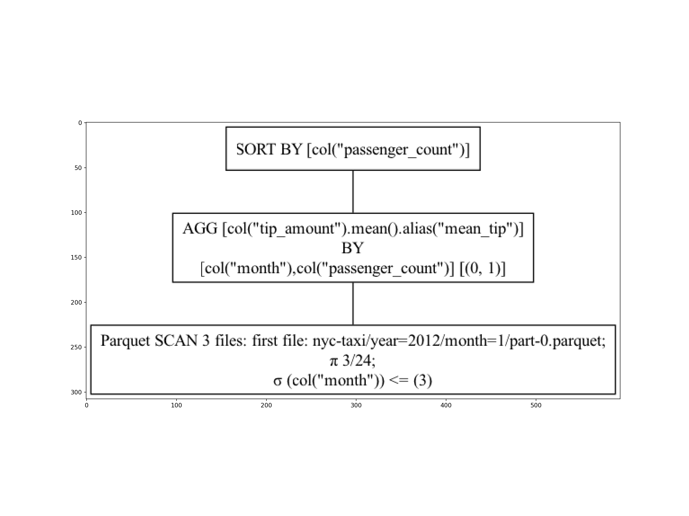

import polars as pl
import time
import matplotlibPolars from Python and R
Pro-tip: Just swap . (Python) for $ (R), or vice versa
Load libraries
library(polars)Scan data
nyc = pl.scan_parquet("nyc-taxi/**/*.parquet")
nycNAIVE QUERY PLAN
run LazyFrame.show_graph() to see the optimized version
nyc = pl$scan_parquet("nyc-taxi/**/*.parquet")
nycpolars LazyFrame
$describe_optimized_plan() : Show the optimized query plan.
Naive plan:
Parquet SCAN 12 files: first file: nyc-taxi/year=2012/month=1/part-0.parquet
PROJECT */24 COLUMNSFirst example
Polars operations are registered as queries until they are collected.
q1 = (
nyc
.group_by(["passenger_count"])
.agg([
pl.mean("tip_amount")#.alias("mean_tip") ## alias is optional
])
.sort("passenger_count")
)
q1NAIVE QUERY PLAN
run LazyFrame.show_graph() to see the optimized version
q1 = (
nyc
$group_by("passenger_count")
$agg(
pl$mean("tip_amount")#$alias("mean_tip") ## alias is optional
)
$sort("passenger_count")
)
q1polars LazyFrame
$describe_optimized_plan() : Show the optimized query plan.
Naive plan:
SORT BY [col("passenger_count")]
AGGREGATE
[col("tip_amount").mean()] BY [col("passenger_count")] FROM
Parquet SCAN 12 files: first file: nyc-taxi/year=2012/month=1/part-0.parquet
PROJECT */24 COLUMNS
R-polars multiline syntax
Polars-style x$method1()$method2()... chaining may seem a little odd to R users, especially for multiline queries. Here I have adopted the same general styling as Python: By enclosing the full query in parentheses (), we can start each $method() on a new line. If this isn’t to your fancy, you could also rewrite these multiline queries as follows:
nyc$group_by(
"passenger_count"
)$agg(
pl$mean("tip_amount")
)$sort("passenger_count")(Note: this is the naive query plan, not the optimized query that polars will actually implement for us. We’ll come back to this idea shortly.)
Calling collect() enforces computation.
tic = time.time()
dat1 = q1.collect()
toc = time.time()
dat1
shape: (18, 2)
| passenger_count | tip_amount |
|---|---|
| i64 | f64 |
| 0 | 0.862099 |
| 1 | 1.151011 |
| 2 | 1.08158 |
| 3 | 0.962949 |
| 4 | 0.844519 |
| … | … |
| 177 | 1.0 |
| 208 | 0.0 |
| 247 | 2.3 |
| 249 | 0.0 |
| 254 | 0.0 |
# print(f"Time difference of {toc - tic} seconds")tic = Sys.time()
dat1 = q1$collect()
toc = Sys.time()
dat1shape: (18, 2)
┌─────────────────┬────────────┐
│ passenger_count ┆ tip_amount │
│ --- ┆ --- │
│ i64 ┆ f64 │
╞═════════════════╪════════════╡
│ 0 ┆ 0.862099 │
│ 1 ┆ 1.151011 │
│ 2 ┆ 1.08158 │
│ 3 ┆ 0.962949 │
│ 4 ┆ 0.844519 │
│ … ┆ … │
│ 177 ┆ 1.0 │
│ 208 ┆ 0.0 │
│ 247 ┆ 2.3 │
│ 249 ┆ 0.0 │
│ 254 ┆ 0.0 │
└─────────────────┴────────────┘toc - ticTime difference of 2.80115 secsAggregation
Subsetting along partition dimensions allows for even more efficiency gains.
q2 = (
nyc
.filter(pl.col("month") <= 3)
.group_by(["month", "passenger_count"])
.agg([pl.mean("tip_amount").alias("mean_tip")])
.sort("passenger_count")
)q2 = (
nyc
$filter(pl$col("month") <= 3)
$group_by("month", "passenger_count")
$agg(pl$mean("tip_amount")$alias("mean_tip"))
$sort("passenger_count")
)Let’s take a look at the optimized query that Polars will implement for us.
# q2 # naive
q2.show_graph() # optimized
q2$describe_optimized_plan()SORT BY [col("passenger_count")]
AGGREGATE
[col("tip_amount").mean().alias("mean_tip")] BY [col("month"), col("passenger_count")] FROM
Parquet SCAN 3 files: first file: nyc-taxi/year=2012/month=1/part-0.parquet
PROJECT 3/24 COLUMNS
SELECTION: [(col("month").cast(Float64)) <= (3.0)]Now, let’s run the query and collect the results.
tic = time.time()
dat2 = q2.collect()
toc = time.time()
dat2
shape: (29, 3)
| month | passenger_count | mean_tip |
|---|---|---|
| i64 | i64 | f64 |
| 1 | 0 | 0.841718 |
| 2 | 0 | 0.876637 |
| 3 | 0 | 0.877675 |
| 3 | 1 | 1.089205 |
| 1 | 1 | 1.036863 |
| … | … | … |
| 2 | 9 | 0.0 |
| 1 | 9 | 0.0 |
| 1 | 65 | 0.0 |
| 3 | 208 | 0.0 |
| 1 | 208 | 0.0 |
# print(f"Time difference of {toc - tic} seconds")tic = Sys.time()
dat2 = q2$collect()
toc = Sys.time()
dat2shape: (29, 3)
┌───────┬─────────────────┬──────────┐
│ month ┆ passenger_count ┆ mean_tip │
│ --- ┆ --- ┆ --- │
│ i64 ┆ i64 ┆ f64 │
╞═══════╪═════════════════╪══════════╡
│ 2 ┆ 0 ┆ 0.876637 │
│ 3 ┆ 0 ┆ 0.877675 │
│ 1 ┆ 0 ┆ 0.841718 │
│ 1 ┆ 1 ┆ 1.036863 │
│ 2 ┆ 1 ┆ 1.06849 │
│ … ┆ … ┆ … │
│ 2 ┆ 9 ┆ 0.0 │
│ 1 ┆ 9 ┆ 0.0 │
│ 1 ┆ 65 ┆ 0.0 │
│ 1 ┆ 208 ┆ 0.0 │
│ 3 ┆ 208 ┆ 0.0 │
└───────┴─────────────────┴──────────┘toc - ticTime difference of 3.239856 secsHigh-dimensional grouping example. This query provides an example where polars is noticeably slower than DuckDB.
q3 = (
nyc
.group_by(["passenger_count", "trip_distance"])
.agg([
pl.mean("tip_amount").alias("mean_tip"),
pl.mean("fare_amount").alias("mean_fare"),
])
.sort(["passenger_count", "trip_distance"])
)
tic = time.time()
dat3 = q3.collect()
toc = time.time()
dat3
shape: (25_569, 4)
| passenger_count | trip_distance | mean_tip | mean_fare |
|---|---|---|---|
| i64 | f64 | f64 | f64 |
| 0 | 0.0 | 1.345135 | 17.504564 |
| 0 | 0.01 | 0.178571 | 34.642857 |
| 0 | 0.02 | 4.35 | 61.05 |
| 0 | 0.03 | 16.25 | 74.0 |
| 0 | 0.04 | 0.03 | 46.5 |
| … | … | … | … |
| 208 | 5.1 | 0.0 | 12.5 |
| 208 | 6.6 | 0.0 | 17.7 |
| 247 | 3.31 | 2.3 | 11.5 |
| 249 | 1.69 | 0.0 | 8.5 |
| 254 | 1.02 | 0.0 | 6.0 |
# print(f"Time difference of {toc - tic} seconds")q3 = (
nyc
$group_by("passenger_count", "trip_distance")
$agg(
pl$mean("tip_amount")$alias("mean_tip"),
pl$mean("fare_amount")$alias("mean_fare")
)
$sort("passenger_count", "trip_distance")
)
tic = Sys.time()
dat3 = q3$collect()
toc = Sys.time()
dat3shape: (25_569, 4)
┌─────────────────┬───────────────┬──────────┬───────────┐
│ passenger_count ┆ trip_distance ┆ mean_tip ┆ mean_fare │
│ --- ┆ --- ┆ --- ┆ --- │
│ i64 ┆ f64 ┆ f64 ┆ f64 │
╞═════════════════╪═══════════════╪══════════╪═══════════╡
│ 0 ┆ 0.0 ┆ 1.345135 ┆ 17.504564 │
│ 0 ┆ 0.01 ┆ 0.178571 ┆ 34.642857 │
│ 0 ┆ 0.02 ┆ 4.35 ┆ 61.05 │
│ 0 ┆ 0.03 ┆ 16.25 ┆ 74.0 │
│ 0 ┆ 0.04 ┆ 0.03 ┆ 46.5 │
│ … ┆ … ┆ … ┆ … │
│ 208 ┆ 5.1 ┆ 0.0 ┆ 12.5 │
│ 208 ┆ 6.6 ┆ 0.0 ┆ 17.7 │
│ 247 ┆ 3.31 ┆ 2.3 ┆ 11.5 │
│ 249 ┆ 1.69 ┆ 0.0 ┆ 8.5 │
│ 254 ┆ 1.02 ┆ 0.0 ┆ 6.0 │
└─────────────────┴───────────────┴──────────┴───────────┘toc - ticTime difference of 53.98448 secsAs an aside, if we didn’t care about column aliases (or sorting), then the previous query could be shortened to:
(
nyc
.group_by(["passenger_count", "trip_distance"])
.agg(pl.col(["tip_amount", "fare_amount"]).mean())
.collect()
)(
nyc
$group_by("passenger_count", "trip_distance")
$agg(pl$col("tip_amount", "fare_amount")$mean())
$collect()
)Pivot (reshape)
In polars, we have two distinct reshape methods:
pivot: => long to widemelt: => wide to long
Here we’ll melt to go from wide to long and use the eager execution engine (i.e., on the dat3 DataFrame object that we’ve already computed) for expediency.
dat3.melt(id_vars = ["passenger_count", "trip_distance"])
shape: (51_138, 4)
| passenger_count | trip_distance | variable | value |
|---|---|---|---|
| i64 | f64 | str | f64 |
| 0 | 0.0 | "mean_tip" | 1.345135 |
| 0 | 0.01 | "mean_tip" | 0.178571 |
| 0 | 0.02 | "mean_tip" | 4.35 |
| 0 | 0.03 | "mean_tip" | 16.25 |
| 0 | 0.04 | "mean_tip" | 0.03 |
| … | … | … | … |
| 208 | 5.1 | "mean_fare" | 12.5 |
| 208 | 6.6 | "mean_fare" | 17.7 |
| 247 | 3.31 | "mean_fare" | 11.5 |
| 249 | 1.69 | "mean_fare" | 8.5 |
| 254 | 1.02 | "mean_fare" | 6.0 |
dat3$melt(id_vars = c("passenger_count", "trip_distance"))shape: (51_138, 4)
┌─────────────────┬───────────────┬───────────┬──────────┐
│ passenger_count ┆ trip_distance ┆ variable ┆ value │
│ --- ┆ --- ┆ --- ┆ --- │
│ i64 ┆ f64 ┆ str ┆ f64 │
╞═════════════════╪═══════════════╪═══════════╪══════════╡
│ 0 ┆ 0.0 ┆ mean_tip ┆ 1.345135 │
│ 0 ┆ 0.01 ┆ mean_tip ┆ 0.178571 │
│ 0 ┆ 0.02 ┆ mean_tip ┆ 4.35 │
│ 0 ┆ 0.03 ┆ mean_tip ┆ 16.25 │
│ 0 ┆ 0.04 ┆ mean_tip ┆ 0.03 │
│ … ┆ … ┆ … ┆ … │
│ 208 ┆ 5.1 ┆ mean_fare ┆ 12.5 │
│ 208 ┆ 6.6 ┆ mean_fare ┆ 17.7 │
│ 247 ┆ 3.31 ┆ mean_fare ┆ 11.5 │
│ 249 ┆ 1.69 ┆ mean_fare ┆ 8.5 │
│ 254 ┆ 1.02 ┆ mean_fare ┆ 6.0 │
└─────────────────┴───────────────┴───────────┴──────────┘Joins (merges)
mean_tips = nyc.group_by("month").agg(pl.col("tip_amount").mean())
mean_fares = nyc.group_by("month").agg(pl.col("fare_amount").mean())(
mean_tips
.join(
mean_fares,
on = "month",
how = "left" # default is inner join
)
.collect()
)
shape: (12, 3)
| month | tip_amount | fare_amount |
|---|---|---|
| i64 | f64 | f64 |
| 9 | 1.254601 | 12.391198 |
| 6 | 1.091082 | 10.548651 |
| 12 | 1.237651 | 12.313953 |
| 3 | 1.056353 | 10.223107 |
| 7 | 1.059312 | 10.379943 |
| … | … | … |
| 10 | 1.281239 | 12.501252 |
| 8 | 1.079521 | 10.49265 |
| 11 | 1.250903 | 12.270138 |
| 2 | 1.036874 | 9.94264 |
| 5 | 1.078014 | 10.585157 |
mean_tips = nyc$group_by("month")$agg(pl$col("tip_amount")$mean())
mean_fares = nyc$group_by("month")$agg(pl$col("fare_amount")$mean())(
mean_tips
$join(
mean_fares,
on = "month",
how = "left" # default is inner join
)
$collect()
)shape: (12, 3)
┌───────┬────────────┬─────────────┐
│ month ┆ tip_amount ┆ fare_amount │
│ --- ┆ --- ┆ --- │
│ i64 ┆ f64 ┆ f64 │
╞═══════╪════════════╪═════════════╡
│ 6 ┆ 1.091082 ┆ 10.548651 │
│ 9 ┆ 1.254601 ┆ 12.391198 │
│ 12 ┆ 1.237651 ┆ 12.313953 │
│ 3 ┆ 1.056353 ┆ 10.223107 │
│ 4 ┆ 1.043167 ┆ 10.33549 │
│ … ┆ … ┆ … │
│ 7 ┆ 1.059312 ┆ 10.379943 │
│ 2 ┆ 1.036874 ┆ 9.94264 │
│ 8 ┆ 1.079521 ┆ 10.49265 │
│ 5 ┆ 1.078014 ┆ 10.585157 │
│ 11 ┆ 1.250903 ┆ 12.270138 │
└───────┴────────────┴─────────────┘